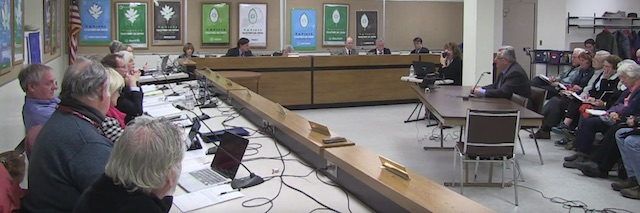

2018-01-05 08:00

Barnstable County’s Sheriff has the dubious distinction of recently joining Bristol and Plymouth county sheriffs in signing 287(g) agreements with ICE. Dartmouth’s Sheriff Tom Hodgson will be hosting an annual 287(g) Steering Committee meeting on January 11th at 6PM. The meeting is open to the public and feedback is requested.
Along these same lines — on January 3, 2018 the Barnstable County Assembly of Delegates held a public hearing to vote on a proposal by Provincetown Delegate Brian O’Malley (County Resolution 17-10) to not support the County Sheriff’s pursuit of an ICE 287(g) agreement, though the agreement is already in place. Barnstable County Sheriff James Cummings answered questions on the 287(g) program he just signed with ICE, then left before listening to the community he supposedly serves. County Delegate Christopher Kanaga (Orleans) asked that two members of the press be permitted to report on the testimony but the request was denied for “fire code” reasons. Fortunately there was a recording of the meeting:
https://www.youtube.com/watch?v=r4d-Jpvjb28&t=8m7s
One member of the Cape Cod Coalition for Safe Communities offered a summary of the proceedings:
While you might find our testimony interesting, even more interesting to me are the questions asked by the delegates after the sheriff’s initial presentation and the comments the delegates made after the hearing was adjourned and the business meeting convened to consider Brian [O’Malley’s] proposal. Although the weighted vote was against the proposal, the majority of the delegates voted in favor of it. Their reactions were serious and thoughtful — we have many allies who share our reservations about the sheriff’s intentions. My impression was that he left immediately after his portion of the hearing was done. If that’s true, I think that not staying to listen to the comments of the public or the delegates was arrogant and disrespectful, not the behavior I expect from a public servant.
The first two hours of the Assembly hearings featured the sheriff first presenting his case, followed by questions from the delegates. (There’s one delegate from each of the fifteen towns, but their votes are weighted depending on population.) This all started because, before the sheriff’s 287(g) application was approved, Brian O’Malley, the delegate from P’town, presented a proposal on December 6 asking the Assembly to vote not to support the application. Somewhere between 20-30 of us showed up, some just to show support by our presence for Brian’s resolution but some of us to talk. The Speaker freaked out, adjourned the meeting, and then put together this public hearing. Over 100 people showed up last night. Out of the 23 speakers, only three spoke in favor of the sheriff’s new powers.
The question now is: What can we do to help move the Safe Communities Act out of committee and make this issue disappear? There will be a meeting on January 8th in Falmouth to discuss precisely that:
https://www.facebook.com/events/210192542883146/